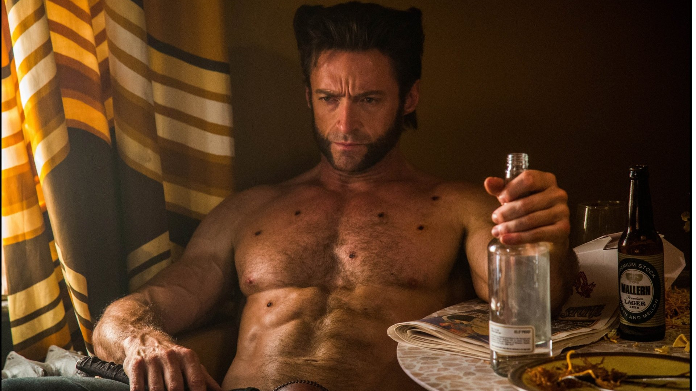
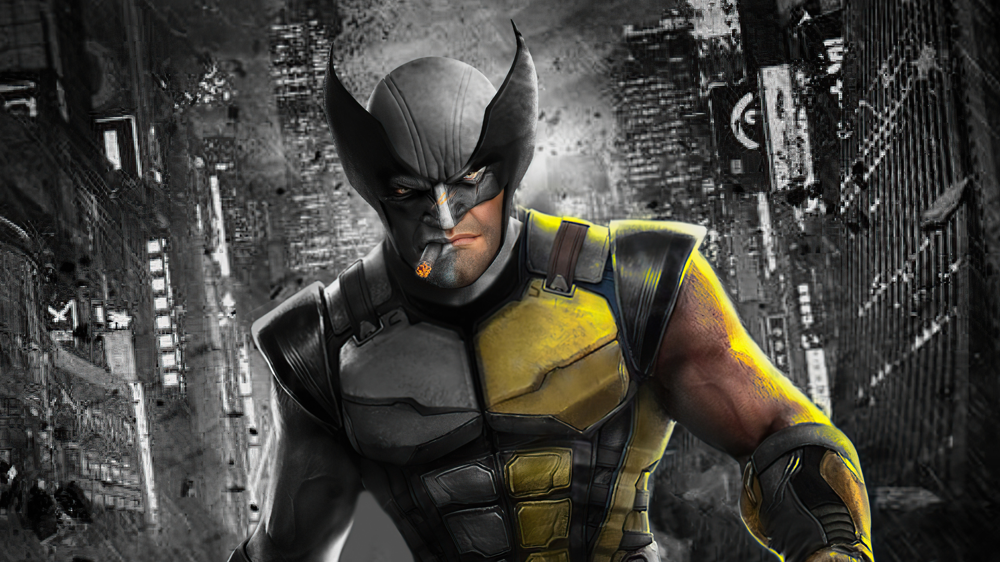
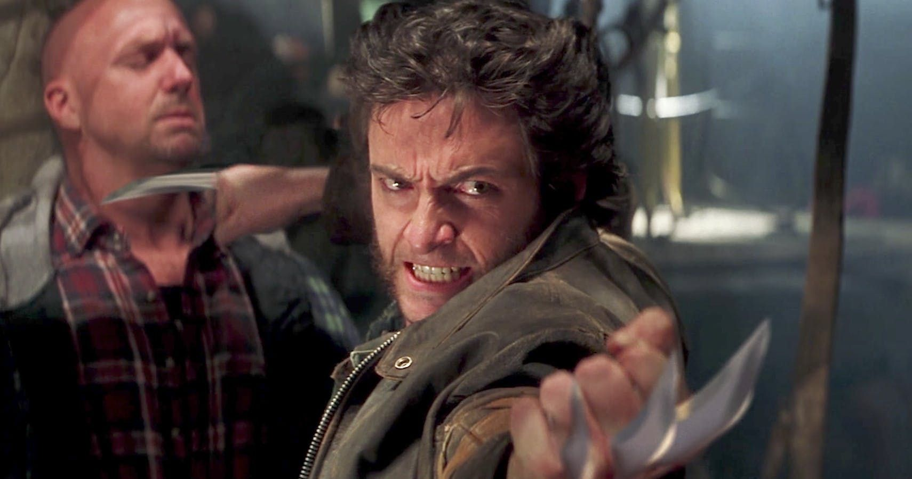
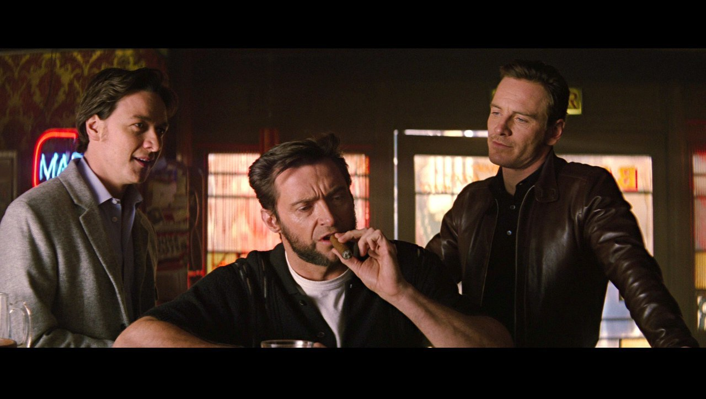
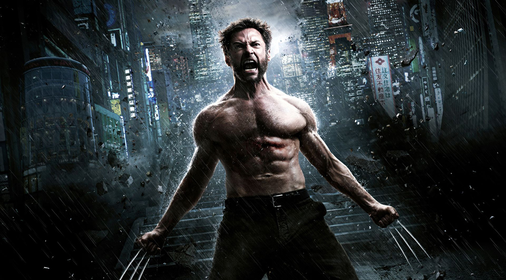
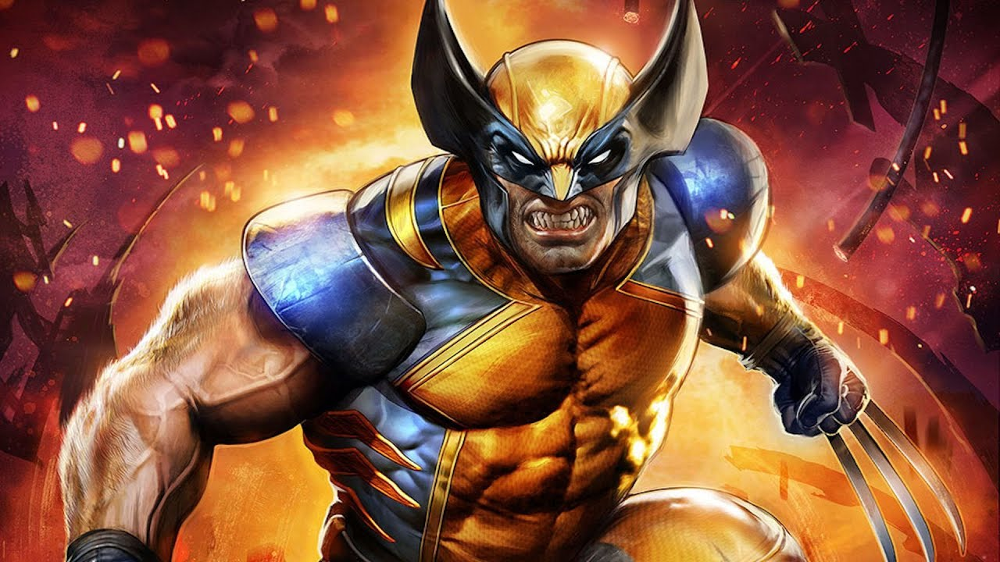
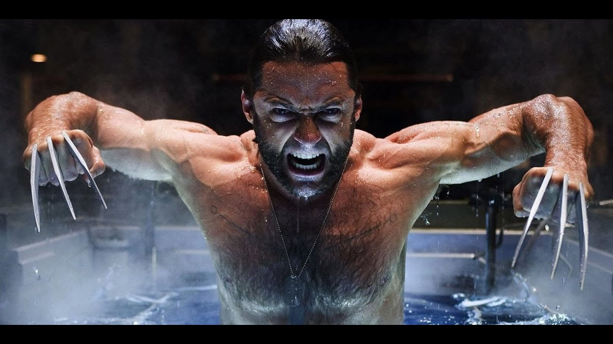
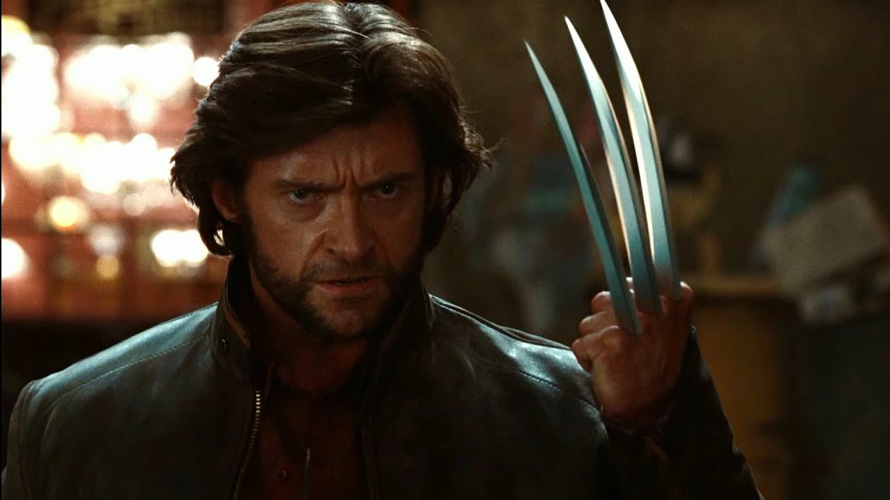
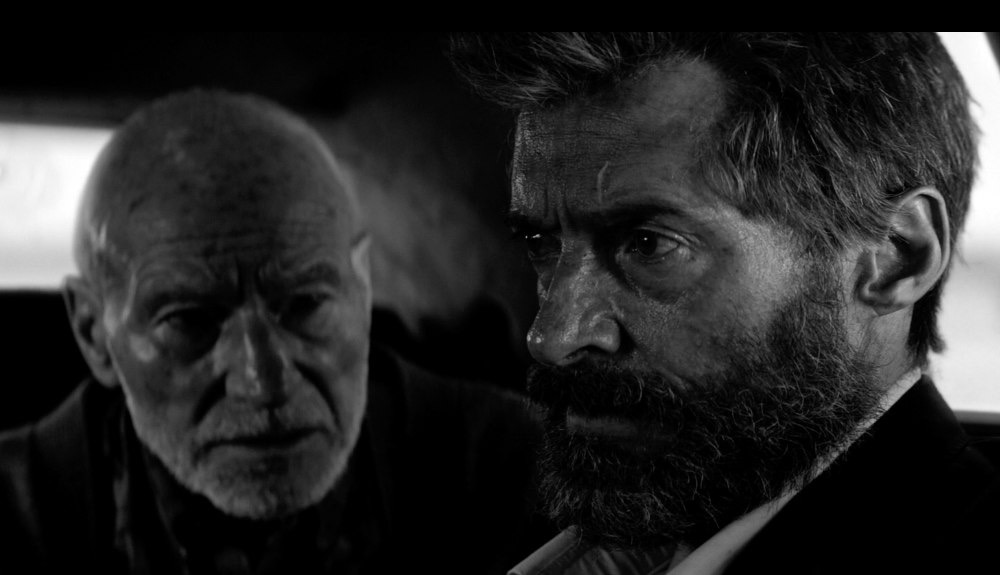
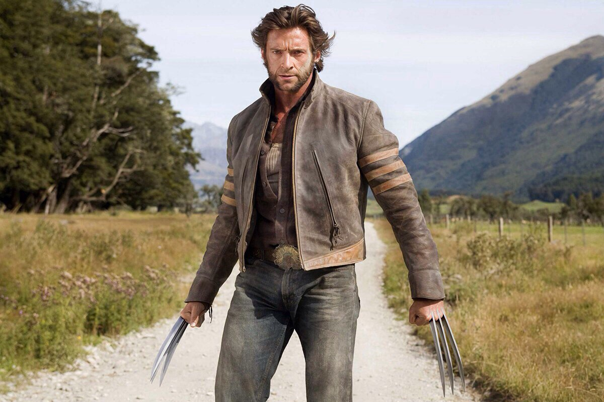

Росомаха
"Я - Росомаха. Я лучший в своем деле, но то, что я делаю лучше всего, не очень хорошо." - Росомаха.

Описание
Проклятый яростью берсерка, жестокий мутант, известный как Росомаха, имеет репутацию как выдающегося супергероя, так и смертельного убийцы.
Родившийся как Джеймс Хоулетт в богатой канадской семье в конце 19 века, он был вынужден покинуть свою семью после трагического проявления его звериных способностей ускоренного исцеления, обостренных чувств и костяных когтей в каждой руке.
Приняв имя Логан, он скитался по миру, прожив долгую жизнь, наполненную кровью, войной и предательством.
Действуя как одинокий волк, Логан стал невольным объектом программы "Оружие Икс", и его кости были покрыты неразрушимым адамантием, что сделало его, без сомнения, самым совершенным оружием.
Первое появление
The Incredible Hulk #180 (июль 1974)
Занятие
Военный (ранее), наёмник (ранее), антигерой
Настоящее имя
Джеймс Хоулетт
Локация
Земля-TRN414
Земля-10005
Земля-17315
Галерея








